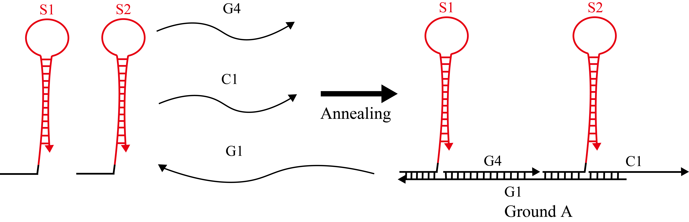
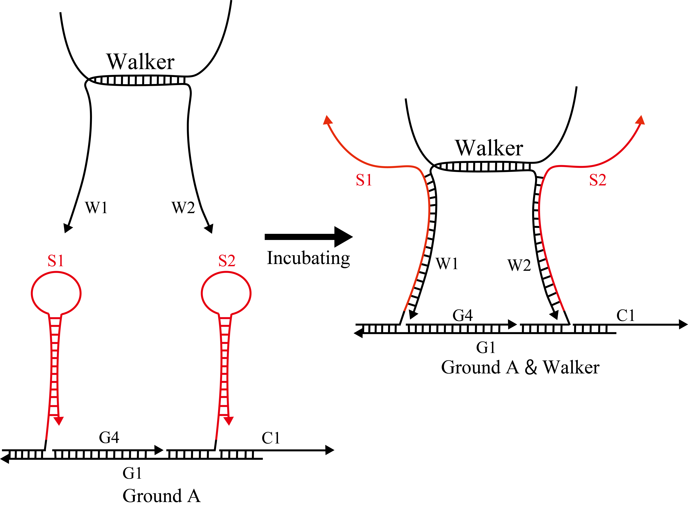

-
Simulation Condition
We set the binding rate constant (kf) based on toehold length as follows[1,2].
If toehold_length ≤ 6
kf = 5.0×10n-1 [M-1s-1]
else
kf = 3.0×106 [M-1s-1]
Where
n : toehold_length
-
Type & Strands
WalkerTractorは一本鎖DNAであるT1とT2をアニーリングすることで生成される。 アニーリングは95℃で5分間温めた後、4時間かけてじっくりと20℃になるまで温度を下げるという条件で行う。
Walker is made of annealed W1 and W2 which are single DNA strands.

Ground AName Base sequences (5'→3') T1 CCCTAAACTAAACATTACTAACTTATCCTTTTGCCTCGTATCCTAACCGAACGGACTCCAGGACATCACACGCTCAATCACCACCT T2 CCCTAAACTAAACATTACTAACTTATCCTTGTCCGTTCGGTTAGGATACGAGGCAATCCAGGACATCCTCACGCTCAATCAGCACCT Hairpins S1 and S2 were mixed with single strands C1, G1 and G4, then annealed to produce Ground A. 
Ground BName Base sequences (5'→3') S1 GGTAGTTCTAGGGTGCTGAGGTGGTGATTGAGCGTGTGATGTCACCACGTCTTCTCGCATCACACGCTCAATC S2 CACCTCGGATCTTGATGGAGGTGCTGATTGAGCGTGAGGATGTCAGCACCTCAACTCGCATCCTCACGCTCAATC G1 TCATAGGCACCGTTCAAGATCCGAGGTGAGTGCATAGATAGTCATAGCCTTGGACCACCCTAGAACTACCT G4 GTCCAAGGCTATGACTATCTATGCACT C1 ACGGTGCCTATGACATGGTACTCAGCT Hairpins S1 and S2 were mixed with single strands C2, G2 and G4, then annealed to produce Ground B.

Ground CName Base sequences (5'→3') G2 TACCATGAGTCGATCAAGATCCGAGGTGAGTGCATAGATAGTCATAGCCTTGGACCACCCTAGAACTACCAGCTGAGTACCATG C2 TCGACTCATGGTACAGTATCCGTGGCA Hairpin S1 and single strands S3, S4 were mixed with single strands G3 and S4, then annealed to produce Ground C.

GroundName Base sequences (5'→3') S3 CACCTCGGATCTTGATGGAGGTGCTGATTGAGCGTGAGGATGCGCC S4 GGCGCATCCTCACGCTCAATC G3 TCAAGATCCGAGGTGAGTGCATAGATAGTCATAGCCTTGGACCACCCTAGAACTACCTGCCACGGATACTG Ground A, B and C were incubated at room temperature for 5 hours to produce Ground.
 Walker & Ground A
Walker & Ground A
Ground A and the pre- assembled Walker were incubated at room temperature for 2 hours to produce Walker & Ground A.
 FuelFuel is made of annealed F1 and F2 which are single DNA strands.

Name Base sequences (5'→3') F1 TGTGAAGCGAGAACTCGTGGTGAGATGTCTCCCTCAATCAGCACCTCAACTCGCATCCTCA F2 TGAGGATGCGAGTTGAGGTGCTGACATCCTCACGCTCAATCAGCACCTCAACTCGCA -
Wet Experiment of DNA Walker
Sample Preparation
Step.1 DiluteWe diluted each strand until reaching 10 μM. The experiment was performed at 20°C in Tris-EDTA buffer supplemented with 12.5 mM MgCl2.
Step.2 AnnealingWe annealed DNA samples by the following three conditions to figure out the best annealing condition. We heated the mixture at 95℃ for 5 minutes and slowly cool to 20℃ over the course of 1,5,10 hours with thermal cycler.
Electrophoresis① 電気泳動装置にゲルをセットした。
Material
Setting gel on Electrophoresis chamber.
② サンプル（10μL）とローディングダイ（2μL）を混合した。
Mixing Samples (10μl) and loading dye (2μl).
③ ゲルのレーンに②で作成したサンプルをそれぞれ（10μL）注入し、電気泳動を（80分）行った。
Applying each sample (10μl) to wells and 150V for about 80 minutes.
④ ゲルを取り出し、DNA染色試薬（ GelGreen Nucleic Acid Stain 10,000X DMSO 0.5mL）で40分染色した。
Taking gel out of wells, staining it by using DNA staining solution in 40 minutes.
⑤ 染色したゲルをゲルイメージャーで観察、分析した。
Observing fluorescences by using gel imager.
Each material was purchased from companies below.
EquipmentMaterial Name Company Poly-Acrylamide Gel e-PAGEL ATTO, JAPAN TBE Buffer WSE-7051EzRunTBE ATTO, JAPAN loading dye Gel Loading Dye Purple (6x) B7024S BioLabs, JAPAN DNA stain GelGreen Nucleic Acid Stain 10,000X DMSO 0.5mL Biotium, USA Each equipment was purchased from companies below.
Equipment Name Company Electrophoresis chamber AE-y530MW ATTO, JAPAN Thermal cycler GeneAtlas(ASTEC325) ASTEC, JAPAN gel imager GELSCAN-2 iMeasure, JAPAN -
Reference
[1] D. Zhan and E. Winfree: Control of DNA Strand Displacement Kinetics using Toehold Exchange,J. Am. Chem. Soc, Vol. 131, pp. 17303-17314, 2009.
[2] S. Kobayashi, K. Yanagibashi, K. Fujimoto, K. Komiya and M. Hagiya: Analog DNA Computing Devices Toward the Control of Molecular Robots, Workshop on Self-organization in Swarm of Robots: from Molecular Robots to Mobile Agents (WSSR 2014), Nara, Octorber, 2014.